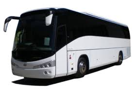

An omnibus is another word for a bus, as in a large vehicle carrying lots of passengers. Other names are autobus and coach. This word has bus in it, and that's the main meaning of omnibus

An omnibus is another word for a bus, as in a large vehicle carrying lots of passengers. Other names are autobus and coach. This word has bus in it, and that's the main meaning of omnibus
Passengers can check TNSTC bus timings at their nearest depots. Timings of AC sleeper, AC sleeper seater, Non-AC sleeper, and AC buses can also be checked through the Tamil Nadu State Transport Corporation's official website as well